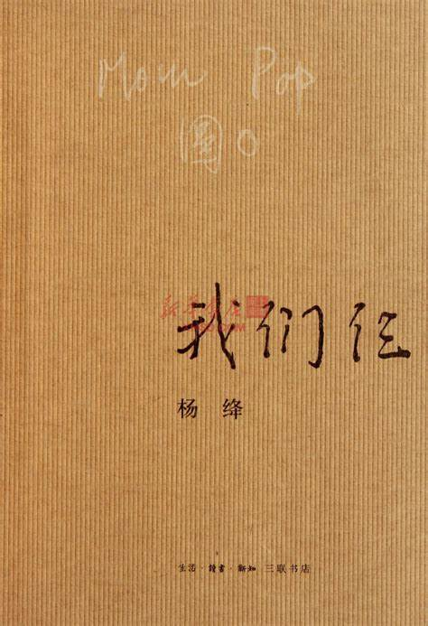
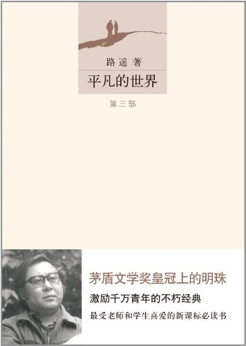
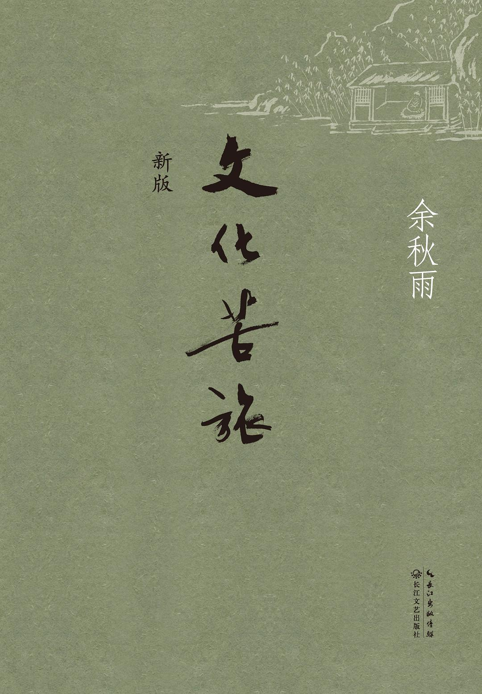
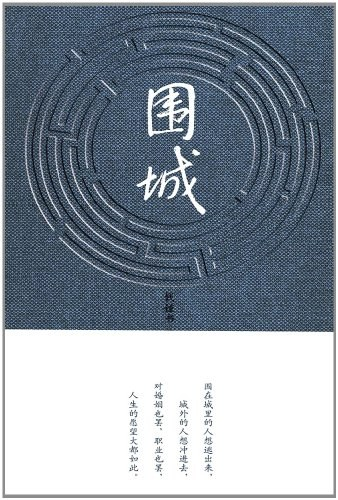

|

《我们仨》《我们仨》是钱钟书夫人杨绛撰写的家庭生活回忆录。1998年，钱钟书逝世，而他和杨绛唯一的女儿钱瑗已于此前（1997年）先他们而去。在人生的伴侣离去四年后，杨绛在92岁高龄的时候用心记述了他们这个特殊家庭63年的风风雨雨、点点滴滴，结成回忆录《我们仨》。 这本书分为两部分。第一部分中，作者以其一贯的慧心、独特的笔法，用梦境的形式讲述了最后几年中一家三口相依为命的情感体验。第二部分，以平实感人的文字记录了自1935年伉俪二人赴英国留学并在牛津喜得爱女，直至1998年丈夫逝世，63年间这个家庭鲜为人知的坎坷历程。 >>> |
|---|
|

《平凡的世界》《平凡的世界》是一部现实主义小说，也是小说化的家族史。作家高度浓缩了中国西北农村的历史变迁过程，作品达到了思想性与艺术性的高度统一，特别是主人公面对困境艰苦奋斗的精神，对今天的大学生朋友仍有启迪。这是一部全景式地表现中国当代城乡社会生活的长篇小说。《平凡的 世界(套装共3册)》共三部。作者在近十年问广阔背景上，通过复杂的矛盾纠葛，刻画了社会各阶层众多普通人的形象。劳动与爱情，挫折与追求，痛苦与欢乐，日常生活与巨大社会冲突，纷繁地交织在一起，深刻地展示了普通人在大时代历史进程中所走过的艰难曲折的道路。 >>> |
|

《文化苦旅》《文化苦旅》一书于1992年首次出版，是余秋雨先生1980年代在海内外讲学和考察途中写下的作品，是他的第一部文化散文集。全书主要包括两部分，一部分为历史、文化散文，另一部分为回忆散文。甫一面世，该书就以文采飞扬、知识丰厚、见解独到而备受万千读者喜爱。由此开创“历史大散文”一代文风，令世人重拾中华文化价值。他的散文别具一格，见常人所未见，思常人所未思，善于在美妙的文字中一步步将读者带入历史文化长河，启迪哲思，引发情致，具有极高的审美价值和史学、文化价值。书中多篇文章后入选中学教材。但由于此书的重大影响，在为余秋雨先生带来无数光环和拥趸的同时，也带来了数之不尽的麻烦和盗版。誉满天下，“谤”亦随身。 >>> |

《活着》《活着》讲述了农村人福贵悲惨的人生遭遇。福贵本是个阔少爷，可他嗜赌如命，终于赌光了家业，一贫如洗。他的父亲被他活活气死，母亲则在穷困中患了重病，福贵前去求药，却在途中被国民党抓去当壮丁。经过几番波折回到家里，才知道母亲早已去世，妻子家珍含辛茹苦地养大两个儿女。此后更加悲惨的命运一次又一次降临到福贵身上，他的妻子、儿女和孙子相继死去，最后只剩福贵和一头老牛相依为命，但老人依旧活着，仿佛比往日更加洒脱与坚强。 >>> |
|

《围城》《围城》是中国现代文学史上一部风格独特的讽刺小说，钱锺书以他洒脱幽默的文笔，描写了一群知识分子的生活百态，被誉为“新儒林外史”。人生是围城，婚姻是围城，冲进去了，就被生存的种种烦愁包围。 克莱登大学哲学博士方鸿渐留学回国了。他是个没有用的人，在欧洲四年，转了三个学校，改了几回专业，生活散漫，学无所成。未婚妻和方鸿渐从未见过面，就撒手人寰。他蒙岳父大人资助得以负笈欧洲，所以回国后，先看望了岳父岳母，这才回到家乡见爹娘。他刚进家门，小报记者便闻风而至，摄下了方博士西服革履的仪态，使他成了县里大名鼎鼎的人物，提亲者更是踏破门槛。方鸿渐不喜欢这些土里土气又打扮时髦的女孩们，爱情在他心中仍一是一片空白的领域。春暖花开的时候，方鸿渐拜访了和自己一起留学归来的女博士苏文纨。在苏文纨家，他结识了苏的表妹唐晓芙。方鸿渐对唐晓芙一见倾心，堕入了情网，可是苏文纨喜欢方鸿渐。方鸿渐不喜欢苏文纨的做作，但是他总不能狠下心来拒绝，怕伤害了苏小姐... >>> |